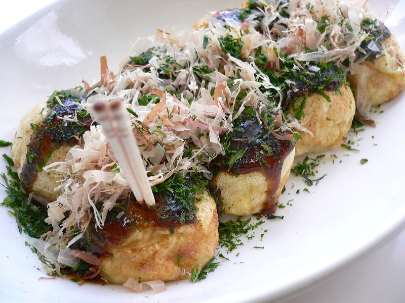
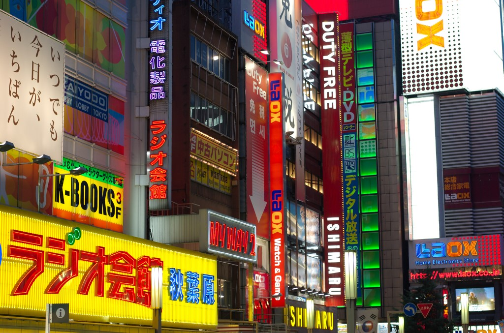

Iconic Destinations
Explore the diverse beauty of Japan


Where Tradition Meets the Future
Mar–May & Oct–Nov
Japanese Yen (¥)
Japanese
Get a JR Pass
Explore the diverse beauty of Japan
Taste the perfection of Japanese Cuisine




Immerse yourself in Japanese traditions




10 Days of Exploration
Your unforgettable journey starts here.